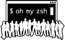

internet browsers
-
chrome: my primary browser for
personal use and web development.
-
firefox: amazing developer
tools.
-
microsoft edge: default browser for
Windows and based on Google Chrome.
-
Safari: for downloading other browsers 🤣
web development
-
alacritty: super fast terminal with performance in mind.
-
bbedit: Mac OS text editor.
-
Fetch: basic SFTP program with a free educational license.
-
git: version control system for all of your software development
needs.
-
github: for hosting personal and
private projects in the cloud.
-
homebrew: essential package manager for web development.
-
sequel pro: MySQL database
management (Test Build required for MySQL 8.0)
-
sizzy: For testing websites on a
variety of devices.
-
visual studio code: my favourite text editor, as of 2017.
-
zsh: best shell for web development.
-

oh my zsh: zsh framework with amazing themes and plugins
productivity
-
alfred: much better than spotlight.
-
iA Writer: note taking app with support for
Markdown, tags and folders.
-
canary mail: email client with trackpad gestures and built-in
email encryption.
-
clockify: time tracking application
with nice charts.
-
horo: time countdown
for presentations.
-
numi: smart calculator that can be enhanced with extensions.
utilities
-
alt-tab: switch between windows, which should be the default
behaviour.
-
flux: changes the display
colors during the day, so your eyes don't bleed at night.
-
keystroke pro: display keyboard
shortcuts on your screen, which is useful for teaching.
-
tiles: move and resize
your windows with keyboard shortcuts.
miscellaneous
-
adobe reader: for digitally signing
legal documentations.
-
app cleaner: deletes apps and files
hidden deep inside your Mac.
-
camo: turns your iPhone into a webcam.
-
discord: free to use chat
server
for gaming and open source projects.
-
kobo: Canadian e-book store
-
lynda: highly recommended
education platform.
-
malwarebytes: virus
scanner
for Mac and Windows.
-
rocket: for writing emojis.
-
screen
flow: records your screen and uploads to YouTube and Vimeo.
-
slack: chat server popular
with startups.
-
spotify: streaming music for
work or pleasure.
-
zoom: for webinars and meetings at
work.